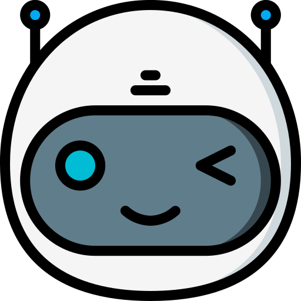

AI 术语百科探索人工智能、AI 智能体与大语言模型的核心概念，让技术更简单易懂
人工智能（Artificial Intelligence）是计算机科学的一个分支，致力于创造能够模拟人类智能的系统。 它使机器能够学习、推理、感知环境并做出决策，从简单的规则引擎到复杂的深度学习网络都属于 AI 的范畴。
AI Agent是一种能够感知环境、自主决策并执行动作的智能系统。 与传统 AI 不同，Agent 具有目标导向和自主性，可以在没有人类持续干预的情况下， 根据环境反馈调整行为，完成复杂任务。它是大模型时代的重要应用形态。
大语言模型（Large Language Model）是基于深度学习的自然语言处理模型， 通过海量文本数据训练而成。它们能够理解、生成和处理人类语言，是现代 AI 应用的核心引擎， 如 GPT、Claude、Kimi 等都是典型的 LLM。
用户输入给模型的指令或问题，引导模型生成相应输出
模型处理文本的最小单位，可以是字、词或子词片段
模型一次能处理的最大文本长度，影响记忆和推理能力
控制模型输出的随机性，值越高回答越多样，越低越确定
在预训练模型基础上，用特定数据进一步训练以适配任务
结合外部知识库检索，让模型基于准确信息回答问题
模型生成看似合理但实际错误或无意义的内容
将文本转换为数值向量的技术，用于语义理解和检索